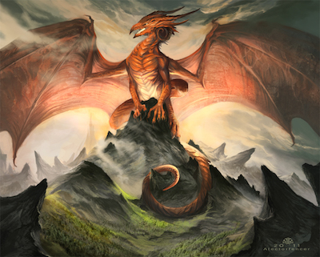
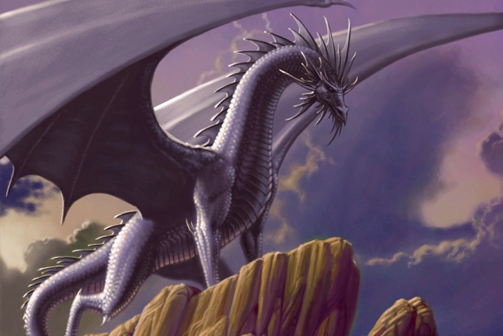
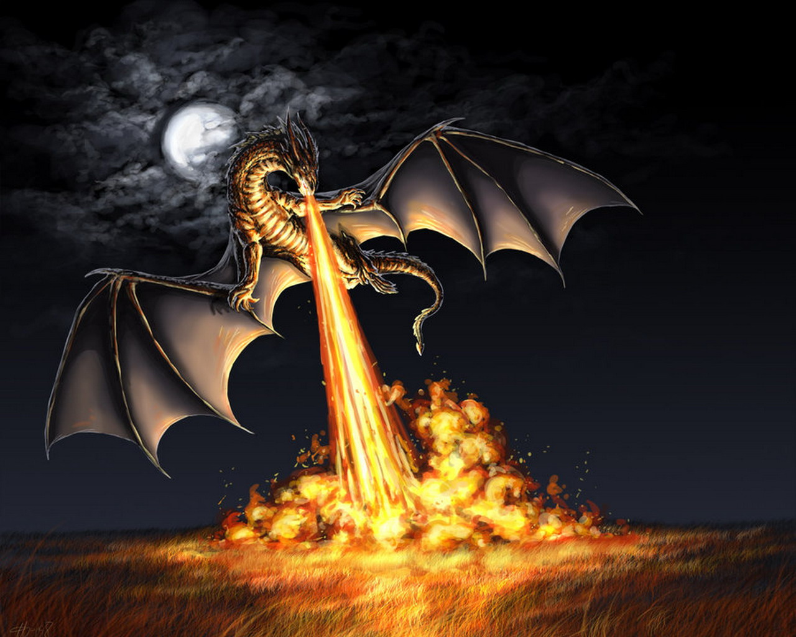
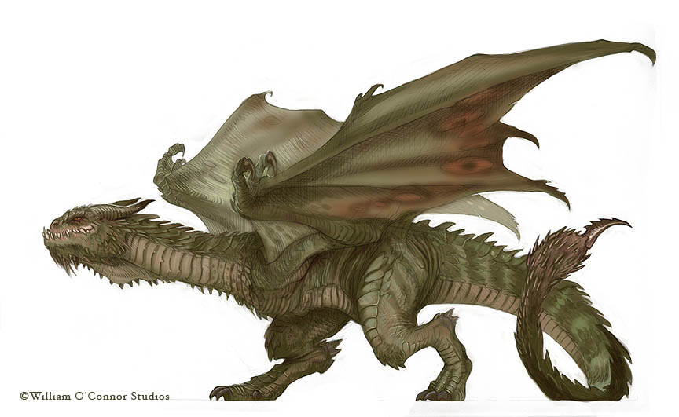
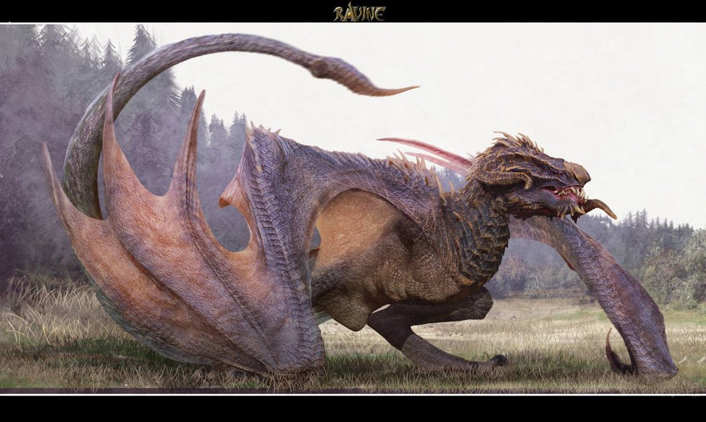
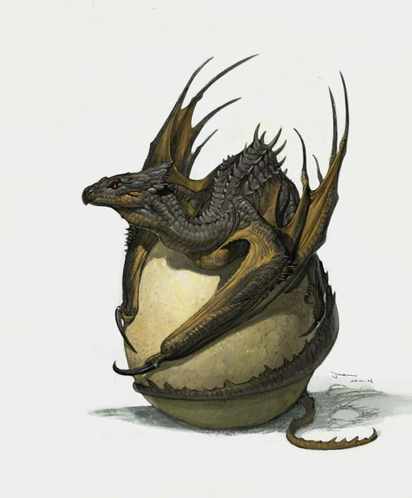
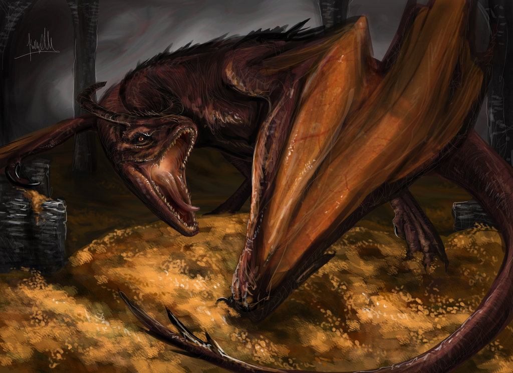

Dragons Vs. Wyverns...Whats the Difference?
Before we start comparing what a dragon and a wyvern is, we must first make a few assumptions. Both are reptiles with scales, a tail, four legs, and a pair of wings. Now besides those similarities, their behavior and habits on how they live are very different. While you can call both of them dragons, most scholars like to think of wyverns as a subspecies of dragons.





What is a dragon
- Most dragons can breathe some kind of element like fire (most common), ice, smoke, lightning, or poisonous gas.
- Dragon scales are harder than any known steel mankind has found, but through trial and error, knights have found various weak points around the body, notably the eyes, wing joints and wing membrane, and leg joints.
- Dragon's are not very agile, but for what they lack in speed, they make up for in durability and strength.
- Some species of dragons can grow to the size of mountains given enough time, but they require vast amounts of food.
- If food is scarce, a dragon can go into hibernation for decades to centuries.
- Some species of dragons hoard gold, gems and precious metals as a sign of wealth while others collect books and scrolls for information.






What is a Wyvern
- Wyverns do not breathe fire, but secret venom from fangs and sharp spurs over their body and tail.
- Wyvern scales are softer than dragon scales, which allow them to be more agile in the air.
- Wyverns have two hind legs and a pair of wings that they can use as forelegs when they are on the ground.
- Wyverns are generally more territorial than dragons.